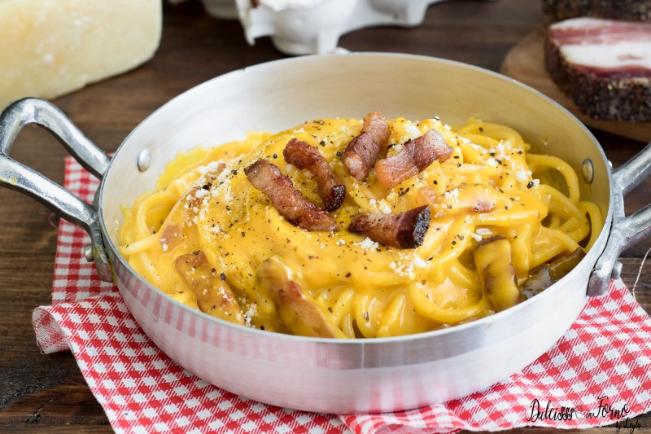

Delicious and creamy pasta alla carbonara recipe that will get you compliments.
- 400 g of pasta (spaghetti, mezze maniche)
- 280 g of guanciale
- 200 g of grated pecorino romano
- 5 egg yolks
- 1 whole egg
- black pepper
- Boil a pot of water for the pasta.
- Cut the rind from the guanciale and chop it to strips
- Cook it in the pan at medium heat without oil, it will cook in its fat. Wait until it becomes crispy and put it aside.
- Put the egg yolks and the whole egg together in a bowl, add the pecorino romano, mix it up until it becomes creamy and add some black pepper.
- When the water is boiling add the pasta and some salt. When it's ready, drain the pasta (while keeping some of the water aside) and put it in the pan.
- Add the cream and the guanciale and mix it up.
- If the cream is too dense add some of the boiled water you put aside until it becomes creamy.
- Add some black pepper if you like and mix.
- Enjoy!